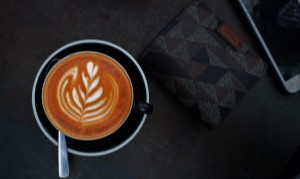
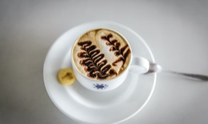

Kopi Arabika
Kopi arabika awalnya berasal dari negara Brazil. Kopi arabika merupakan jenis kopi pertama yang ditemukan dan dibudidayakan oleh manusia hingga sekarang.

Kopi Robusta
Kopi robusta awalnya ditemukan di negara Kongo. Jenis kopi ini dapat tumbuh baik di ketinggian 400-700 m dpl (diatas permukaan laut) dengan suhu 21-24 derajat celcius.

Kopi Liberika
Kopi liberika berasal dari Liberia, Afrika barat. Kopi liberika dapat tumbuh sekitar 9 meter dari tanah. Jenis kopi ini memiliki ukuran daun, bunga, buah, dan pohon yang lebih besar.